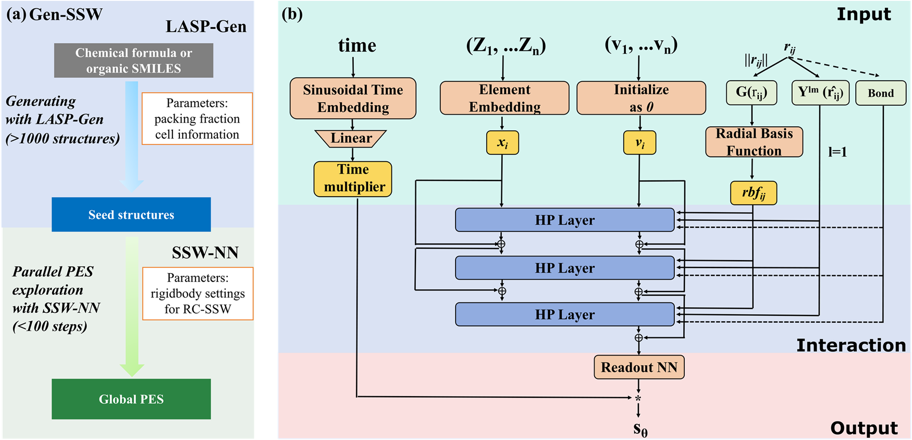
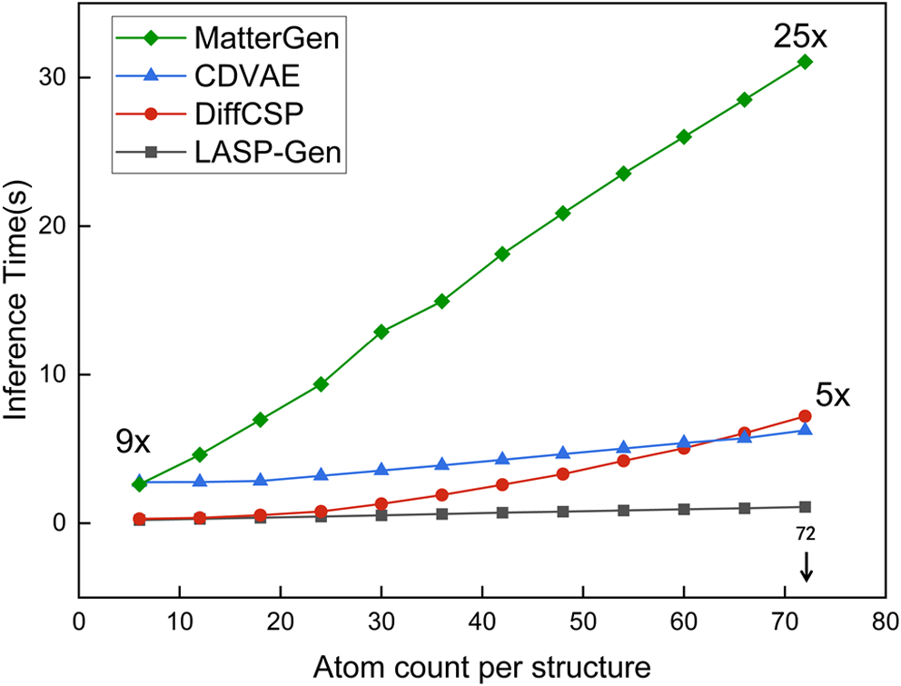
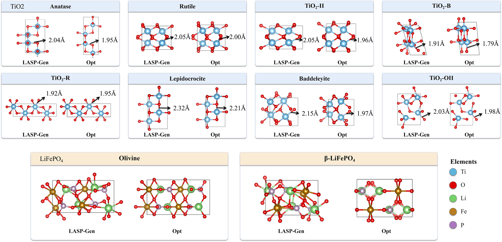
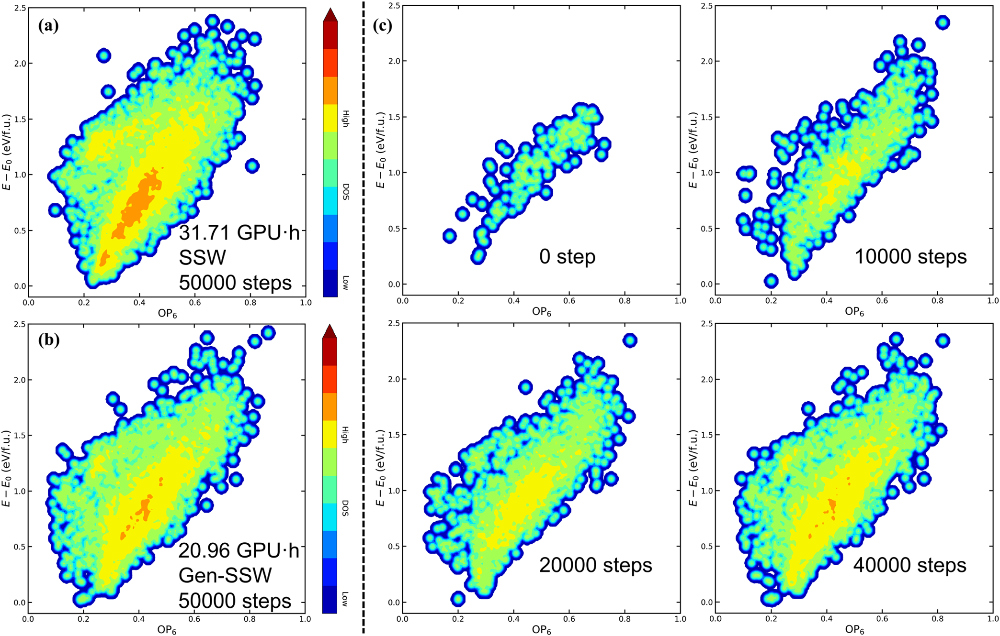
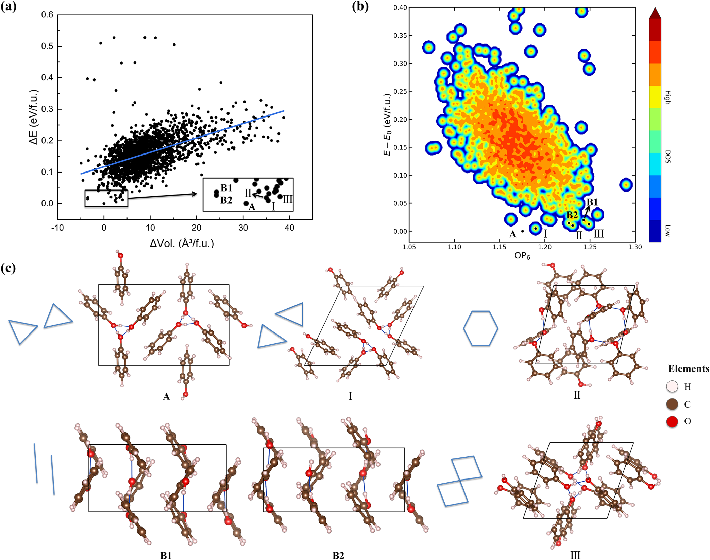
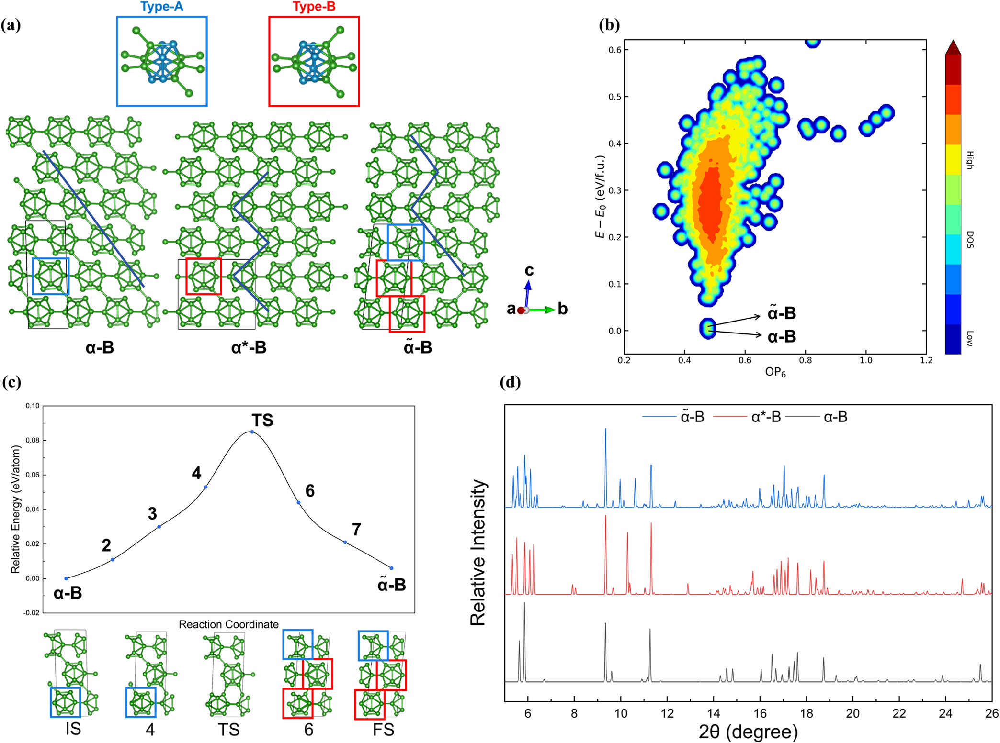

Gen-SSW：让生成模型负责“撒种子”，让并行短轨迹探索全局势能面
论文原文 ↗论文：Global Potential Energy Surface Exploration Using Generative Stochastic Surface Walking (Gen-SSW)
作者：Qiming Liang、Zi-Xing Guo、Jin-Peng Tang、Tong Guan、Cheng Tong、Ye-Fei Li、Zhi-Pan Liu
来源：Journal of Chemical Theory and Computation，2026-10-30
链接：官方页面 · 论文 PDF · LASP-Gen 代码与模型
为什么有了生成模型，还需要全局结构搜索？
给定一种组成，想找到它能形成哪些晶体、非晶结构和低能多晶型，本质上是在探索势能面：每一套原子坐标和晶胞对应一个能量，稳定或亚稳结构对应不同的能量谷。局部几何优化可以把一个初始结构带到附近的谷底，却未必能抵达相隔很远的另一个谷。
传统随机表面行走（stochastic surface walking，SSW）通过沿结构较容易变形的方向施加平滑偏置，帮助体系离开当前能量谷，再结合能量评价和接受规则持续探索。它能跨越局部势垒，但一条轨迹仍要依次走过不同区域。势能面越复杂，越容易把大量时间花在同一大盆地内；到达另一个结构家族可能需要很长的串行搜索。
本文的思路是：不要让一个搜索者从头走遍全部区域，而是先用生成模型把许多起点放在不同区域，再让每个起点进行一小段 SSW。 生成器负责提供结构多样性，SSW 负责把这些粗略起点扩展成真正的低能结构与局部势能面。这使原本依赖长轨迹的任务，变成可以大规模并行的许多短任务。

图1：LASP-Gen 批量生成初始结构，随后由独立的短 SSW 轨迹展开探索。
从一个化学式开始，结构究竟怎样生成？
以 Ti₄O₈ 为例，输入首先确定一个晶胞里有哪些元素、各有多少原子。LASP-Gen 将晶胞生成与原子位置生成分开处理。它根据原子共价半径估算原子占据的总体积，再结合抽取的堆积率确定晶胞体积，同时抽取轴长比例和晶胞角度。用户也可以给定晶系、堆积率或晶胞条件，控制要探索的空间。
在这个晶胞内，原子分数坐标从噪声开始，经扩散模型逐步去噪，得到化学上合理的排列。分数坐标以晶胞为单位描述位置，周期边界使越过一侧的原子从另一侧出现；模型训练时也按这种周期结构处理噪声。生成过程中晶胞固定，后续几何优化和 SSW 再调整结构。 因而这里并非同时用一个网络自由生成所有晶格参数与坐标。
LASP-Gen 内部的 HPNN-ET 网络，为每个原子预测去噪方向。所谓 SE(3) 等变，意思是旋转或平移输入结构时，网络给出的原子位移也相应变换，不会因为选择不同的空间朝向而改变生成规律。网络利用邻居之间的距离和角度信息形成高阶局部描述，以较低计算开销表达原子环境；去噪末段还加入短程排斥，减少原子互相重叠。
训练目标是从受噪声扰动的已知结构恢复合理排列，而不是直接预测哪个结构能量最低。作者分别使用无机晶体与分子晶体数据训练模型：无机模型的数据包括 MP20，以及由 Alexandria 和 Materials Project 构成、含 682,637 个结构的 Alex20-MP20 数据集；分子晶体模型使用 144,603 个 CSD 结构。对于苯酚这样的分子晶体，输入还包括分子的 SMILES 和晶胞内分子数，并借助分子成键信息维持分子身份。
接下来，生成模型通常批量提供上千个种子结构。每个种子经过优化后启动一段短 SSW；搜索所需的能量与力由 GG-NN 机器学习势提供。LASP-Gen 是生成器，GG-NN 是能量与力的计算器，SSW 是探索算法，三者承担不同任务。重要的低能结构再交给 DFT 精化比较，并可继续计算相变路径和可供实验辨认的结构特征。
生成器带来了什么：更快地产生不同的合理起点
作者先用 TiO₂ 检验生成器本身。统一在 MP20 上训练后，每种方法生成 40,000 个结构，再看优化后能否恢复八种低能 TiO₂ 晶型，其中五种不在训练集中。LASP-Gen 恢复了全部八种，包括较难命中的 baddeleyite 和 OII 相。
这里的优势是晶型覆盖与生成速度的结合。LASP-Gen 的总命中率为 0.420，高于随机 AIRSS 的 0.079、CDVAE 的 0.098 和 DiffCSP 的 0.296；MatterGen 的总命中率更高，为 0.478。与此同时，在 RTX 4090 上生成一个 Ti₄O₈ 结构，LASP-Gen 用时约 0.30 秒，MatterGen 为 4.80 秒，CDVAE 为 2.85 秒，DiffCSP 为 0.40 秒。随原子数增至 72，LASP-Gen 仍保持较好的推理效率，适合批量提供搜索起点。

图2：不同原子数下的生成时间与相对加速。

图3：TiO₂ 和 LiFePO₄ 的生成结构及优化结果。
LiFePO₄ 则解释了为什么不能停留在“生成后局部优化”。它的有序框架更难直接重建：200,000 个生成结构中，只有很少的结构命中橄榄石和 β 相。局部成键合理，并不意味着完整的长程框架已经拼对。因此，作者把生成结构作为 SSW 的入口，继续跨越邻近势垒、调整原子连接，而不是把一次生成的命中率当成整个搜索流程的终点。
核心检验：把一条长轨迹拆成一千条短轨迹
Ge₂Sb₂Te₅ 相变合金的势能面同时包含晶态、非晶态及许多亚稳结构，适合检验全局覆盖。作者使用含 36 个原子的 Ge₈Sb₈Te₂₀ 晶胞，比较两种安排：传统 SSW 在一块 GPU 上走 50,000 步；Gen-SSW 从 1,000 个生成种子出发，每个走 50 步，总步数同样是 50,000，在四块 GPU 上并行，每块同时运行两个任务。
作者用 OP6 与能量绘制搜索分布。OP6 是反映局部取向有序程度的结构指标，可以把不同有序程度的构型放到同一张图中比较。随着每个种子的搜索从 0 步增加到 10、20、40 步，初始结构周围不断展开，逐渐形成与长 SSW 相近的广泛分布。这正是本文要展示的机制：生成负责把起点分散出去，短 SSW 把离散起点扩展成覆盖多个区域的结构集合。

图4：长 SSW 与生成种子加短 SSW 在 GST 势能面上的覆盖及计算成本。
传统 SSW 用时 31.71 小时，消耗 31.71 GPU·小时；Gen-SSW 的实际等待时间降至 5.24 小时，消耗 20.96 GPU·小时。因此，这个设置获得约六倍的时间缩短，并节省约三分之一的 GPU 总用量。两者找到的不同结构分别为 6,888 和 5,174 个，Gen-SSW 每小时发现结构的速度约提高 4.5 倍。DFT 比较还显示，Gen-SSW 找到的最低能结构比该条传统 SSW 轨迹的结果低 0.08 eV/化学式单元，距 Materials Project 参考结构高 0.02 eV/化学式单元。
这里值得借鉴的是搜索组织方式：它让增加并行资源能够直接转化为更多互相独立的结构探索，而不必等待单条轨迹逐步走到新的结构家族。
分子晶体与共价晶体：搜索最终得到什么材料认识？
苯酚晶体检验的是另一种复杂性。相同分子可以通过不同的氢键方向、芳环堆积与层间排列，形成许多能量相近的晶体。作者在含六个苯酚分子的晶胞中生成 1,200 个起点，保留 962 个成键关系正确的结构，再分别进行 100 步适用于分子晶体的 Rigid-Chain SSW。
所得结构的体积与能量相关性很弱，R² 只有 0.278，说明紧密堆积并不足以决定苯酚的稳定排列，氢键与 π–π 堆积之间的配合更加关键。搜索识别了螺旋链、近六边形和菱形投影等不同氢键拓扑，也找到了重原子骨架相同、只因氢键方向不同而能量相差约 0.01 eV/化学式单元的 B1、B2 结构。若要恢复实验常压 A 相，作者使用更长的 3,000 步 RC-SSW；多种新低能排列则在短轨迹集合中就已出现。

图5：苯酚的能量分布及竞争的氢键和分子堆积方式。
最突出的新结构预测来自硼。硼具有复杂的多中心共价成键，改变结构往往需要重排强键。Gen-SSW 在 B₃₆ 中找到 11 种能量位于基态以上 0.1 eV/原子以内的结构，分属六个空间群，其中包括新预测的 α̃-B。它属于 C2/m 空间群，能量仅比 α-B 高 6 meV/原子，比 γ-B 低 17 meV/原子。

图6：新硼相 α̃-B 的局部结构、相变路径与模拟衍射特征。
α-B 以 B₁₂ 二十面体团簇为基本单元。新相保留了这一团簇骨架，但组合了两类局部对称性不同的 B₁₂ 单元，并改变相邻层间的成键连接。作者随后用可变晶胞双端表面行走搜索 α-B 到 α̃-B 的转化路径，发现其中一层沿 a−b 方向滑移，同时断开并重建部分层间 B—B 键；DFT 精化得到的势垒为 0.085 eV/原子。据此，作者提出高温结合非静水剪切应力的合成思路，并计算了可用于区分这些相的 X 射线衍射峰分裂与特征反射。
这篇文章新增的能力
Gen-SSW 把学习到的结构先验接入真实势能面搜索，形成了从组成或分子输入—批量结构种子—并行短程探索—低能结构—DFT 与相变路径的连续链条。它既利用生成模型快速跳到不同结构区域，又保留了全局优化对复杂框架、分子堆积和共价成键重排的处理能力。
因此，本文最有价值的部分是“生成先验怎样改变全局搜索的计算组织”，以及由此导出的新硼相和可检验转化路径。对于已有机器学习势、希望扩大结构搜索覆盖并利用多 GPU 的研究，起点多样性与短轨迹并行的组合尤其值得参考。
原始摘要完整中文翻译
全局势能面（PES）探索提供了一种从第一性原理预测材料结构的独特途径。本文开发了 Gen-SSW 方法，以实现自主且快速的全局势能面探索；该方法将通用的 SE(3) 等变三维扩散模型 LASP-Gen 与随机表面行走（SSW）全局优化结合起来。传统 SSW 全局势能面探索需要通过较长的串行轨迹克服大型结构盆地之间的高势垒，与之不同，Gen-SSW 建立了一个自主、大规模并行的全局优化框架，通过分而治之实现全局势能面探索：以 LASP-Gen 批量生成的种子结构为起点，执行许多短 SSW 轨迹。通过将 Gen-SSW 应用于复杂材料，我们表明：（i）LASP-Gen 能高效地产生结构多样性丰富、局部化学成键模式合理的结构池；（ii）通过将 LASP-Gen 与 SSW 对接，Gen-SSW 能高效识别材料的低能多晶型，例子涵盖离子材料（TiO₂、LiFePO₄）、非晶合金（Ge₂Sb₂Te₅）、强共价材料（硼）和分子晶体（苯酚晶体）。特别地，我们发现了一种新的硼同素异形体 α̃-B，其能量仅比 α-硼高 6 meV/原子，却比 γ-硼低 17 meV/原子，并提出了通过固—固相变制备这一新相的合成路径。